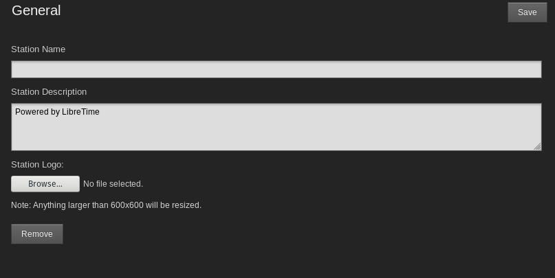
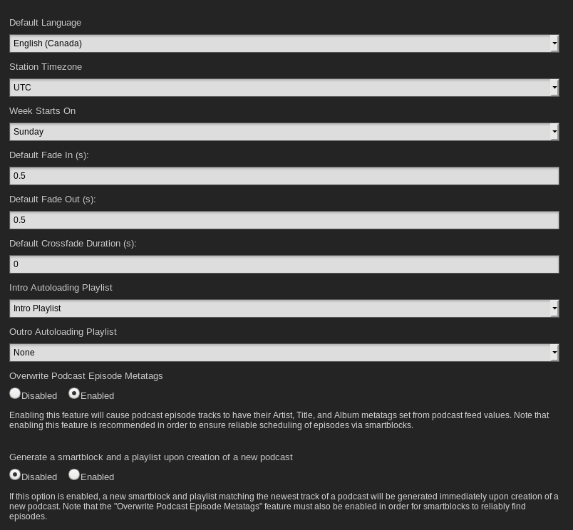
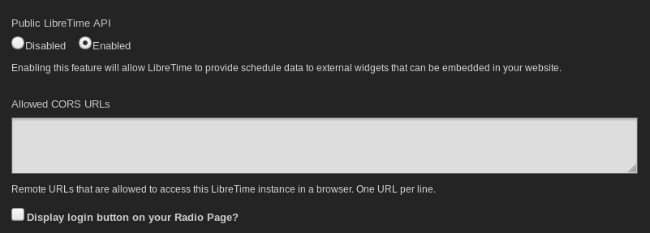
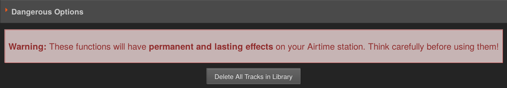
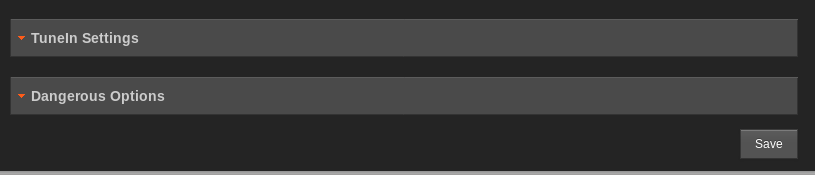
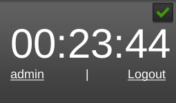

Settings

On the Settings menu, click General to set your Station Name. This text is shown in your web browser's title bar when your station staff are logged into LibreTime, and optionally in stream metadata. You can also set a Station Description and Station Logo here.

The Default Interface Language drop-down menu sets the default localization for your LibreTime instance, and the Station Timezone drop-down menu can be used to display local time at your station. LibreTime stores show times internally in UTC format (similar to Greenwich Mean Time), but displays local time for the convenience of your station staff. You can also set the day of the week that you wish to start your station's weekly schedule on, which defaults to Sunday.
The Track Type Default enables you to select a track type default for uploads.
Initially, the Default Fade In and Default Fade Out times for automated fades are set to half a second, and the Default Crossfade Duration is set to zero seconds. Custom fade and crossfade times can be set for adjacent items in a playlist or static smart block. See the chapter Library for details.
The Intro Autoloading Playlist enables you to select a playlist that will be scheduled at the beginning of every show that has enabled an autoloading playlist. This can be used for instance to insert a station ID or other announcements a the top of every show.
The Outro Autoloading Playlist enables you to select a playlist that will be scheduled after the content of every show with an autoloading playlist.
The Overwrite Podcast Episode Metatags option which is enabled by default causes LibreTime to override the Artist, Title & Album fields on any tracks downloaded from a podcast with information from the RSS feed.
The Generate a smartblock and a playlist upon creation of a new podcast option when enabled will create a smartblock matching the newest episode of a podcast and a playlist containing that smartblock automatically upon adding a podcast to LibreTime. This can also be done manually by the generate smartblock and playlist button under a podcasts settings which is why it is disabled by default.

You can enable live, read-only access to the LibreTime schedule calendar for your station's public website with the Public LibreTime API option, if you wish. (There is more about this feature in the Exporting the schedule chapter, in the Advanced Configuration section of this book).
The Allowed CORS URLs is intended to deal with situations where you want a remote site with a different domain to access the API. This is relevant when there is a reverse proxy server in front of LibreTime. If you are using a reverse proxy, the URLs that will be used to access it should be added here.
The Display login button on your Radio Page? will determine whether visitors to your site see a link to login. If this is disabled DJs and admins will need to goto http://SITEURL/login to be able to login.
The Tune-In Settings section is intended for stations that have partnered with TuneIn to automatically push their now playing metadata to TuneIn. This hasn't been tested and also requires special credentials from TuneIn.

The Dangerous Options section provides an administrator the ability to erase the entire LibreTime library.
When you are done remember click the Save button at the top or bottom of the form.

Individual LibreTime users can choose another interface localization when they log in, or set personal preferences for localization and time zone by clicking their username on the right side of the menu bar.
